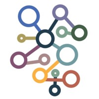

About Us
This project is part of He Sun's 5-year EPSRC Fellowship titled "Efficient Spectral Algorithms for Massive and Dynamic Graphs" with a total award of 1.5 million pounds. The STAG team is based in the School of Informatics, University of Edinburgh, United Kingdom.
Code
You can find STAG's source code from our Github page .
Funding Information
UK Engineering and Physical Sciences Research Council, EP/T00729X/1
Local Graph Clustering
Given a vertex of some underlying graph as input, a local graph clustering algorithm is to find some low-conductance set around the input vertex, while the algorithm runs in time proportional to the size of the target cluster and independent of the size of the entire graph. As one of the key components in designing nearly-linear time graph algorithms, local graph clustering has been extensively studied in algorithmic spectral graph theory.
The GitHub page contains our implemention of the local graph clustering based on PageRank (the ACL algorithm). Comparing with several existing open-source implementation for local graph clustering, our code connects to a Neo4j database running in the AuraDB cloud service, or a database running locally. With this feature, one can run local graph clustering on the entire Wikipedia graph of more than 20GB with a single PC.

Reference
Reid Andersen, Fan R. K. Chung, Kevin J. Lang: Local Graph Partitioning using PageRank Vectors. FOCS 2006: 475-486
Daniel A. Spielman, Shang-Hua Teng: A Local Clustering Algorithm for Massive Graphs and Its Application to Nearly Linear Time Graph Partitioning. SIAM J. Comput. 42(1): 1-26 (2013)
FAQ
Frequently Asked Questions
-
What will be included in STAG? Why does it take 2 years to develop?
Our objective is to develop an open-source library that includes the classical algorithms in algorithmic spectral graph theory, like local graph clustering, spectral sparsification, and Laplacian solvers. In particular, we are very interested to see the practical performance of a sequence of nearly-linear time algorithms developed in the Theoretical Computer Science community over the past 20 years. Such experimental studies of nearly-linear time algorithms would require detailed planning of the algorithms to be implemented, and appropriately choosing the real-world datasets on which our developed codes are evaluated. That is why the first phase of our development would take 2 years.
-
Which programming language is used to develop STAG?
STAG is mainly written in C++. However, it contains a python wrapper STAGPy around the underlying C++ library which provides convenient methods for learning on graphs in python.
-
Do you have more information for your implemented algorithms?
Yes, that's why we have this website. We will publish a series of technical reports to detail our implementation, choice of algorithms, datasets on which our codes are evaluated, and our findings. We expect to publish such technical reports every 2-3 months.
Contact
Peter Macgregor
Research Associate
School of Informatics
University of Edinburgh
peter.macgregor@ed.ac.uk
He Sun
Reader in Algorithms and Complexity
School of Informatics
University of Edinburgh
h.sun@ed.ac.uk
Postal address
School of Informatics
University of Edinburgh
Edinburgh, EH8 9AB
United Kingdom